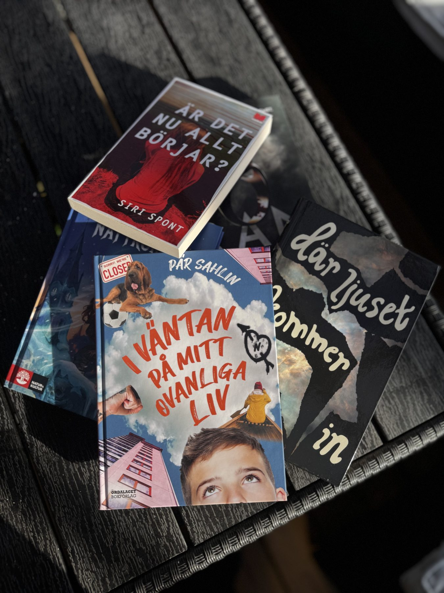
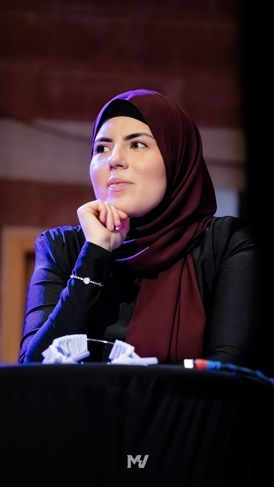

Årets tema
Snart avslöjar vi årets tema
Vilket tema får Botkyrkas elever att sätta pennan mot pappret i år? Beskedet kommer här och på vår Instagram.
Information för lärareBotkyrkas Ordfest är ett läsfrämjande projekt som inspirerar elever i årskurs 6 och 9 att läsa, skriva och uttrycka sig – genom författarbesök, skrivtävlingar och kulturupplevelser.


Professionella författare besöker skolorna och inspirerar eleverna till läsning och skrivande.
Eleverna skriver en text utifrån årets tema och skickar in sina bidrag.
Elever från hela Botkyrka samlas för att fira kreativitet, berättelser och unga röster.
Vinnartexterna publiceras i en gemensam antologi.

Vilket tema får Botkyrkas elever att sätta pennan mot pappret i år? Beskedet kommer här och på vår Instagram.
Information för lärare
En jury med hjärta för litteratur och unga röster läser alla bidrag. Vilka som sitter i årets jury avslöjas snart.
Om juryn
Under läsåret besöker professionella författare Botkyrkas skolor för att inspirera eleverna till att läsa och skriva.
Årets författareVill ni stötta Botkyrkas Ordfest? Läs mer om samarbeten.
Anmäl intresse så hör vi av oss med allt ni behöver veta inför läsåret.